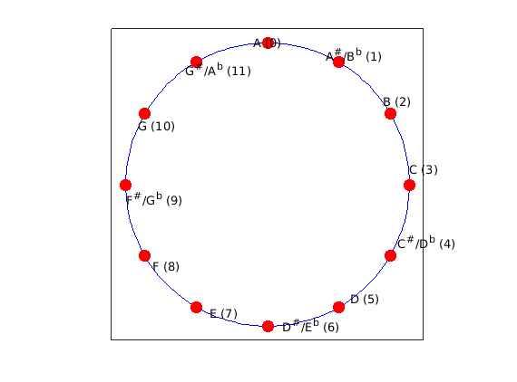
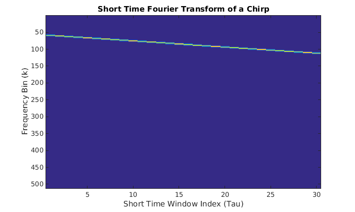
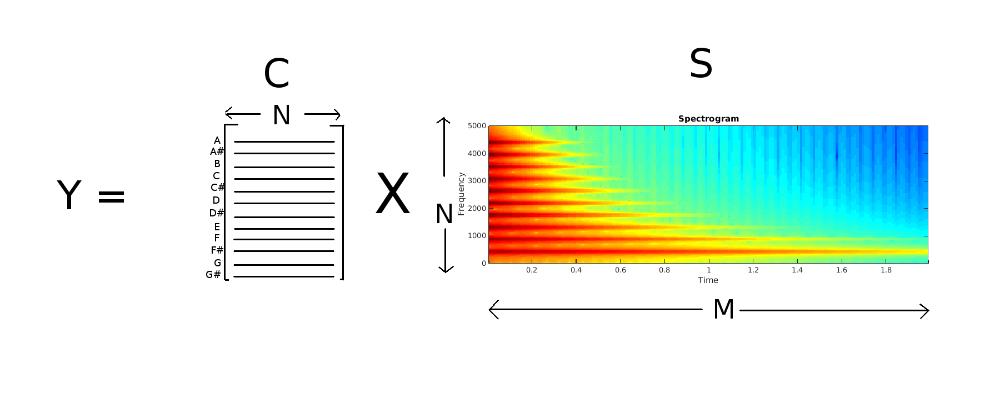

Special thanks to Dan Ellis at Columbia University for inspiration and sound snippets.
Overview
In this lab you will explore an important representation of musical audio known as chroma, which is a octave-independent measure of the strength of all possible notes in the western 12 note scale at different points in time, based on the Short-Time Fourier Transform (STFT). The goal is to come up with a set of musical features that discriminate between different scales and different note progressions between pairs of songs. Chroma is an example of a lossy feature, which means that it is impossible to go back to a unique audio file once the chroma has been extracted, and part of this lab will explore what is retained in this feature set.
Background
Every pitch that we percieve corresponds to a particular frequency f of a sinusoid in a sound signal. The most well-known example is perhaps A4, or the A note that an orchestra tunes to, which is 440hz. By now you have experimented with comb filters and Karplus Strong, so this should be fairly familiar. Below is some more background about frequency representations of musical notes and sampled audio to help get you up to speed.
Octaves
One particular concept that's important for this lab is the notion of an octave. Given a frequency f corresponding to a note, the kth octave of that note corresponds to the frequency fk
Equation 1 \[ f^k = 2^k f \]
where k is an integer, positive or negative. In other words, all frequencies that are doubles or halves of each other are octaves. For instance, if f = 440hz, then 220hz is an octave one below (k = -1), 880hz is an octave 1 above (k = 1), 1760hz is an octave two above (k = 2), 3520 is an octave 3 above (k = 3), etc.
The amazing fact about octaves is that the perceived pitch of every octave is exactly the same, it's just higher or lower, corresponding to whether it's a a higher or lower frequency. In this lab you will search for a particular note by checking for it around all of its possible octaves.
The 12-Halfstep Chromatic Scale and Western Approximations
In the Western scale, there are 12 notes in an octave, which then repeat in the same sequence in the next octave. The figure below shows these notes (b is flat and # is sharp). The figure is drawn in a circle to highlight the fact that after 12 notes, an octave has been reached, and those same notes repeat in the next octave:

The distance between two adjacent notes is known as a halfstep, and the distance we perceive as a halfstep is always the same. For instance, the interval between A and Bb sounds like the same distance as the interval between E and F. Note, however, that because of the way we percieve octaves in an exponentially doubling way, the frequency interval between halfsteps is not constant. In fact, given a note that corresponds to frequency f, the note m halfsteps above this note is at a frequency fm is given by the equation
Hence, the frequency interval between halfsteps is a multiplicative factor of 21/12. Note that when a full octave (12 halfsteps) have been cycled through, f12 = 2f. Similarly, for 2 octaves (24 halfsteps), f24 = 4f.
The assumption that the distance between halfsteps is exactly the same does not quite match physical reality. Due to the boundary conditions of vibrating strings and vibrating cavities, notes that are 4 halfsteps and 7 halfsteps apart go very well together and are said to be harmonious (they are overtones of the note corresponding to the base frequency). Their frequencies should occur in integer ratios, for similar reasons that comb filters are evenly spaced in the frequency domain, as you saw in a previous lab. However, Equation 2 deals with fractional powers of 2, which are irrational, so they can never perfectly match physical reality. But they are close. In particular
Working with a discrete signal, it is important to keep in mind the Shannon-Nyquist sampling theorem. That is, to represent a frequency f without aliasing in a sample version of a continuous signal, one needs to sample at a rate at least 2f. Human hearing goes up to a range of about 20,000hz. Thus, one common sampling rate is 44010hz, which is more than twice the upper frequency limit of our hearing. However, it is possible to represent audio well with a sampling rate of half that, or 22050hz, which is what will be used in this assignment. This means that frequencies up to about 11000 hz can be represented faithfully, which is more than enough.
Once the sampled audio for a song is in the computer, it is important to recognize that the frequency statistics of a signal are not constant throughout a song. Hence, it makes sense to take the Fourier Transform in little snippets at a time, rather than over the whole song. This leads to what is known as the Short-Time Fourier Transform (STFT). Given a signal X, a hop size h, and a "window" W which is a signal of length N, the STFT is defined as follows
Equation 3
\[ F_{\tau}[k] = \sum_{n = 0}^{N} X[h\tau + n]W[n] e^{-j 2 \pi k n / N} \]
where Tau chooses the chunk number and k chooses the frequency index.
This is simply the discrete Fourier transform taken over a "window" (chunk) of length N, at an offset of h*Tau from the beginning of the song. X[hTau + n] is point multiplied by the "window function" W[n] to prevent sidelobe artifacts from taking rectangular chunks out of the original signal (see Wikipedia for more info).
If the signal X is a real signal (which all music audio is), then there is a lot of redundancy in each complex short-time fourier spectrum. Specifically, for even window size N, frequency indices [1, 2, 3, .., N/2] are the complex conjugates of the frequency indices [N, N-1, N-2, ..., N/2+2]. Hence, it makes sense to only consider frequency indices [1, 2, 3, ..., N/2+1] in each STFT chunk for musical audio. This leads to what's known as the spectrogram, which is what will be the starting point for computing chroma in this lab. To compute the spectrogram in Matlab, use the spectrogram function. Below is a code example of the spectrogram of a linear chirp over two seconds, which you can try out in Matlab
By default, the spectrogram function takes a hop size h of half the window size, so each window overlaps the previous window by 50%. This is fine for our purposes. The plot that's generated by running the above code snippet is shown below:

One of your first tasks for computing chroma will be to figure out what notes the frequency bins correspond to.
Part 1: Designing the Chroma Matrix
Now we are finally ready to jump into the lab. The first part of the lab will walk you through the process of computing chroma features. Please go through all of the steps below in order. Everything that you must submit in your report is highlighted in red.
Given 440hz A as a base frequency, compute the frequency of the rest of the 11 halfsteps in an octave using Equation 2. Fill in the following table (you can copy and paste from a column in matlab)
Note
Halfstep Offset
Frequency from Equation 2 (hz)
A
0
440
A#
1
B
2
C
3
C#
4
D
5
D#
6
E
7
F
8
F#
9
G
10
G#
11
Now write a Matlab function that accepts an integer m, a sampling rate Fs, and a length of time in sections T, and returns a signal X which contains a pure tone (single cosine) of the note that is m halfsteps away from a 440hz A
You can play this sound by typing in
Recall that 4 halfsteps above a base note and 7 halfsteps above a base note mix well. Now that you've written the getPureTone function, try the following code to create and listen to a harmonious 2 second triad chord
Now try the code
What notes form up the chord in each of these two examples, based on the table in question 1? What is the same between these two examples?
Now let's take a look at some audio from a real instrument. piano-chrom.wav (courtesy of Dan Ellis) contains the "chromatic scale" played on a piano, which is all of the halfsteps in one octave played in sequence. Load this sound sequence into Matlab and compute its spectrogram with the following code:
What do you notice about the spectrogram? What happens to the dominant frequencies as time goes on and the player cycles through notes?
Motivated by this example, we will look for notes in regions of the spectrogram around the frequencies of those notes.
Now that you've seen and heard some examples of how notes can exist in an audio signal and you have seen how to compute a spectrogram, it's time to put this all together to figure out how to find notes in the audio without any prior knowledge of the signal.
As a prerequisite step, given a window size of N for the spectrogram, a sampling rate of Fs, and a frequency f in hz, write down the formula to find the frequency bin number k that corresponds to the frequency f.
You can use this formula to find out which Fourier bin contains a note of a given frequency. Note that this number may not be an integer. We will deal with this in the next section.
Now it's finally time to compute the chroma features. For this, you will search for every note in every octave that it can possibly occur, in each window of the spectrogram. Note that a spectrogram S can be viewed as a N x M matrix (and is explicitly stored as such in Matlab), where the rows of S correspond to each of the N frequency indices k and the columns correspond to each of M windows in time. Your task is to create a 12 x Nchroma matrixC, so that when S is multiplied by C on the left, it replaces the spectrogram with a Chromagram. The chromagram is a 12xM matrix which contains a measure of the strength of the 12 possible notes in each of the M spectrogram windows, over all octaves. The picture below shows this matrix equation

Your job is to fill in each row of C (drawn as lines in the above picture). When each row of C is multiplied by each column of the spectrogram, it integrates all frequency bins close to the note that corresponds to that row. Actually, since it is unlikely that the exact bin index of the note we're looking for is an integer, we will take a weighted sum of the bins nearby. For example, if we determine that we're looking for a note whose frequency bin k = 15.7, we might take a weighted average of bins 13, 14, 15, and 16. Below is some skeleton code for computing C. Lines 21-24 take care of the fractional bin problem by putting a Gaussian bump over where the note should be. Your job is to fill in the rest
Now plot C and include this figure in your writeup.
Explain in your own words what each row of C is doing when it's multiplied on the right by the spectrogram, and explain the general shape of the matrix based on what you know about octaves and halfsteps
Now you're going to use the matrix you generated to compute the chromagram for the piano scale we examined earlier. Run the following code
Include the resulting plot with your writeup. Explain what you see in the output (Note that the chromatic scale in this example starts on an E flat)
Repeat the last step, but change the STFT window size on line 3 to other powers of 2. At the very least, try N = 256, N = 512, N = 16384, and N = 32768, to look at the two extremes of very small windows and very large windows. Have a look at the C matrix that's generated for these different window sizes. Based on what you see looking at the C matrix and the chromagrams, can you explain the tradeoff that happens when you increase the window size?